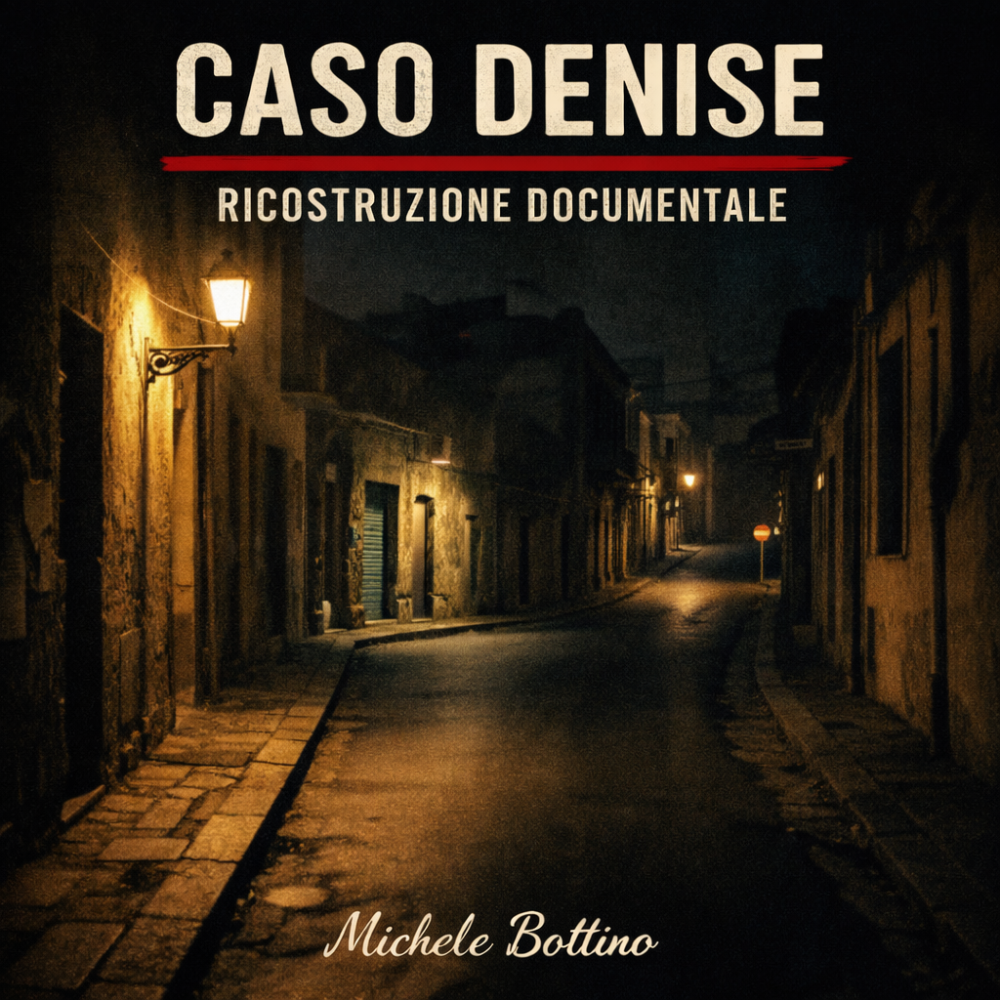

Il caso di Denise Pipitone è uno dei più emblematici quando si cerca di comprendere la differenza tra scomparsa, indagine e costruzione narrativa. Il 1 settembre 2004, a Mazara del Vallo, una bambina di quasi quattro anni scompare in un arco di tempo brevissimo nei pressi dell’abitazione familiare. Da quel momento, la vicenda si trasforma in una struttura aperta che, anziché chiudersi progressivamente attorno a un nucleo di prova, tende a disperdersi nel tempo in una molteplicità di piste, segnalazioni e ricostruzioni mai del tutto stabilizzate.
La caratteristica fondamentale del caso emerge subito: la scomparsa avviene in un contesto urbano, in pieno giorno, in una finestra temporale minima e senza che si consolidi un testimone diretto certo del momento decisivo. Questo elemento iniziale determina l’intera struttura successiva. Non esiste una scena del crimine in senso classico, non esiste un corpo, non esiste un reperto centrale attorno a cui possa organizzarsi una convergenza probatoria. Esiste, invece, una sottrazione improvvisa che apre uno spazio di possibilità enorme e difficilmente controllabile.
Fin dalle prime fasi, l’indagine si orienta su più livelli. Da una parte c’è il contesto familiare, con tensioni pregresse, rapporti conflittuali e dinamiche affettive complesse. Dall’altra c’è la pista del rapimento da parte di terzi, che può implicare uno spostamento rapido della bambina, anche fuori dal territorio locale o nazionale. Questa doppia apertura non si risolve mai del tutto. Nel tempo, le due direzioni non vengono sintetizzate in una sequenza unica, ma continuano a coesistere come possibilità concorrenti.
All’interno del primo blocco investigativo, il nome che assume maggiore rilievo è quello di Jessica Pulizzi. Il processo che la riguarda rappresenta il momento di massima definizione giudiziaria del caso. Tuttavia, proprio qui emerge uno dei punti più importanti dell’intera vicenda: l’assoluzione definitiva elimina quel segmento come punto di convergenza processuale. Non significa che il contesto familiare scompaia dalla narrazione, ma significa che non si consolida in una responsabilità giudiziariamente accertata. Questo passaggio è decisivo, perché lascia il caso formalmente aperto, ma già gravato da una forte dispersione interpretativa.
A complicare ulteriormente la struttura interviene il flusso continuo delle segnalazioni. Nel corso degli anni, il caso Denise si alimenta di avvistamenti, ipotesi internazionali, presunti riconoscimenti, immagini televisive, piste estere, verifiche genetiche e richiami ciclici dell’attenzione pubblica. Ogni nuovo elemento sembra, per un momento, promettere una svolta. Ma quasi sempre il risultato è opposto: la moltiplicazione delle piste allarga il campo e riduce la capacità di costruire una linea coerente. È qui che il caso assume la sua forma specifica. Non una struttura chiusa che si apre, ma una struttura che non riesce mai a chiudersi perché non trova un centro stabile.
L’assenza del corpo è il nodo che domina tutto il caso. Senza un riscontro materiale, ogni ipotesi resta sospesa. Non c’è solo l’assenza di una prova definitiva: manca proprio l’oggetto centrale capace di trasformare la sequenza delle possibilità in un tracciato verificabile. Questo non significa che il caso sia vuoto di dati. Significa che i dati disponibili non sono abbastanza forti da imporsi sugli altri e da assorbire la dispersione narrativa.
Il punto più delicato del caso Denise non è quindi la mancanza totale di informazioni, ma la loro natura. Esistono testimonianze, esistono contesti, esistono verifiche, esistono segmenti investigativi concreti. Ma nessuno di questi elementi ha prodotto, fino a oggi, una convergenza definitiva. Ogni tentativo di chiusura si è trasformato, col tempo, in una nuova riapertura. E ogni riapertura ha generato ulteriore materiale, senza però modificare la struttura profonda del caso.
Da un punto di vista documentario, Denise Pipitone è un caso in cui la narrazione tende a espandersi molto più della prova. Questa asimmetria è il suo tratto dominante. La vicenda resta presente nella memoria pubblica proprio perché non dispone di un punto fermo sufficiente a saturarla. L’assenza di una conclusione genera una permanenza narrativa continua. Il caso non smette di esistere perché non è mai stato davvero chiuso. E non è mai stato chiuso non soltanto perché manchi un colpevole, ma perché manca una sequenza definitiva, un corpo, una prova stabilizzante, un baricentro.
È per questo che il caso Denise Pipitone continua a rappresentare una delle forme più pure di dispersione investigativa. Tutto ciò che emerge sembra aggiungere qualcosa, ma quasi nulla riesce a ridefinire davvero la struttura. La scomparsa resta il solo dato assolutamente stabile. Tutto il resto si organizza intorno ad essa come campo aperto, non come percorso chiuso. E proprio in questa impossibilità di convergenza si trova la natura reale del caso.

Il caso Denise Pipitone
Una scomparsa senza punto di convergenza
Classificazione: Caso reale / Analisi documentaria
Stato del caso: Aperto
Livello di certezza: Basso sul piano ricostruttivo
Metodo applicato: Bottino System (MRN)
Tag: Denise Pipitone, Mazara del Vallo, scomparsa, caso aperto, cronaca nera, analisi documentaria
Aggiornamento: Il caso resta aperto e privo di un elemento definitivo in grado di chiuderlo. Nel febbraio 2026 la Cassazione ha annullato senza rinvio le condanne dell’ex pm Maria Angioni per false dichiarazioni al pubblico ministero: si tratta di uno sviluppo collaterale del contesto giudiziario, non di una svolta sul merito della scomparsa di Denise Pipitone né di un mutamento del quadro investigativo centrale.
Nota metodologica: In questo caso la difficoltà principale non è soltanto l’assenza di prova materiale, ma la dispersione continua delle piste e la mancanza di un punto di convergenza stabile.